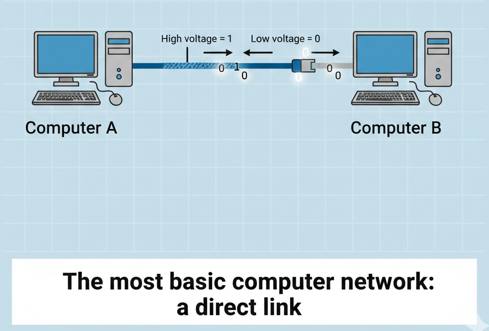
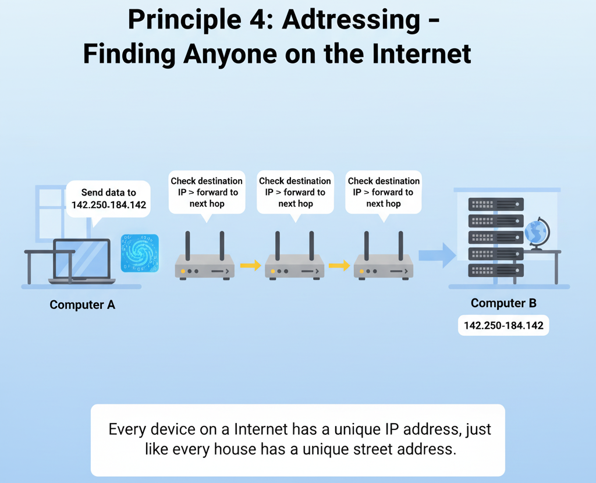

Principle 1: The Need to Share Information
Problem: One computer (A) has data, and another computer (B) needs it, but they're not in the same room.
|
- Primitive solution: Pen drive / USB manually → slow, not always practical
- Better solution: Direct cable connection (ethernet or fiber optic)
- How it works:
- Signals sent through wires → like electricity
- High voltage = "1"
- Low voltage = "0"
- Result: We can send bits (1s and 0s) → Basic network created
|

Basic connection between two computers
|
Principle 2: The Problem of Scale
Problem: Now we have 1000 computers, not just 2. What to do?
|
- Primitive solution: Connect every computer to every other computer → Too many cables, difficult to manage
- 2 Computers: A and B → 1 wire
- 3 Computers (A, B, C): Each connected to every other → 3 cables
- 4 Computers: 6 cables needed
- 100 Computers: 4,950 cables needed 😱 → Practically impossible!
Solution: Central Device (Switch)
- Every computer connects directly to a central switch
- If A wants to talk to C → A gives message to switch → switch forwards it only to C
- Now you need only N cables for N computers (100 computers = 100 cables)
Result: Local Area Network (LAN)
|

How a network switch works
|
Principle 3: The Problem of Connecting Networks
Problem: Now we have multiple LANs, not just one. What to do?
|
- Primitive solution: Connect every computer to every other computer across networks → Impossible (scaling issue again)
Solution: Router
- A special device (Router) connects to both networks
- If A (LAN 1) wants to talk to X (LAN 2) → A gives message to its switch → switch forwards to its router → router sends to LAN 2's router → LAN 2's router forwards only to X
- Now you need only N connections for N LANs
Result: Internet = Network of Networks
|

How routers connect networks
|
Principle 4: The Problem of Finding Anyone (Addressing)
Problem: With many computers and networks, how do we know where to send messages?
|
- Solution: Give every computer a unique address → like a home address
- Give every network a unique address → like a city address
- Computer address = IP Address
- When a router receives a packet:
- It looks at the destination IP to decide where to send it next
- Routers don't know the full path → just the next best hop
- Step by step, data reaches its final destination
|

Network addressing concept
|
Principle 5: The Problem of Reliability and Fairness
Problem: Issues with large files (e.g., 1-hour video)
|
- If the entire file is sent at once → connection gets blocked, no one else can send anything
- If a small bit gets corrupted → the entire file must be resent 😓
Solution: Break file into Packets
- File is divided into small envelopes (packets)
- Each packet contains:
- Payload (a small part of the data)
- Destination IP (where it's going)
- Sender IP (where it came from)
- Sequence number (Packet 1 of 5000, Packet 2 of 5000...)
- How it works:
- Each packet can travel by different routes
- At the receiver:
- Packets reassembled in correct order
- If any packet is missing → request it again
- Result = perfect file reconstruction
🌍 Protocol (TCP/IP)
- The rules (addressing, breaking, sending, reassembling) are called Protocol
- Internet's main protocol is TCP/IP (Transmission Control Protocol / Internet Protocol)
- TCP → handles reliability (packet order, retransmission of missing packets)
- IP → handles addressing and routing
|
IPv4 (classic format):
- 32 bits (4 bytes)
- Divided into 4 octets (8 bits each)
- Written in decimal with dots between octets
- Example: 172.217.16.142 (Google)
- Max 2^32 = 4.3 billion unique addresses
- Problem: Not enough addresses for all devices
|
IPv6
- 128 bits (16 bytes)
- Divided into 8 groups (16 bits each)
- Written in hexadecimal with colons between groups
- Example: 2001:0db8:85a3:0000:0000:8a2e:0370:7334
- Max 2^128 = 340 undecillion addresses → practically infinite!
|
Public IP vs Private IP
| Public IP |
Private IP |
- Analogy: Company's main phone number
- Global, unique → No two devices can have same public IP simultaneously
- Purpose: Global reach (servers)
- Assigned by: ISP (Jio, Airtel, Comcast)
- Who has one:
- Routers (home/office)
- Servers (websites, online services)
|
- Analogy: Internal phone extensions
- Local, non-unique → Same private IP can exist in different networks
- Purpose: Local communication within a network
- Assigned by: Your router (via DHCP)
- Reserved Ranges:
- 10.0.0.0 – 10.255.255.255 (large orgs)
- 172.16.0.0 – 172.31.255.255 (medium networks)
- 192.168.0.0 – 192.168.255.255 (most common for homes)
|
How Public and Private IPs Work Together
- When your device (private IP) accesses internet → router forwards request using its public IP
- When response comes → router sends it back to your device's private IP
- This process is called NAT (Network Address Translation)
🖥️ MAC Address (Media Access Control)
- Unique, permanent 48-bit serial number burned into every network device
- Purpose: Identifies your device in the local network
- Formats:
- Colon-separated → 3C:22:FB:A3:B4:C5
- Hyphen-separated → 3C-22-FB-A3-B4-C5
- Period-separated (Cisco style) → 3c22.fba3.b4c5
- No separators → 3C22FBA3B4C5
Port Number
- 16-bit number (0–65535) used with IP address to identify specific applications/services
- Total ports: 2^16 = 65,536
- Categories of Ports
- Well-Known Ports (0 – 1023)
- Reserved for core internet services
- Examples: 21 → FTP, 22 → SSH, 25 → SMTP, 53 → DNS, 80 → HTTP, 443 → HTTPS
- Registered Ports (1024 – 49151)
- Used by applications/software
- Examples: 3000 → React/Node.js, 3306 → MySQL, 5432 → PostgreSQL, 27017 → MongoDB
- Dynamic/Private/Ephemeral (49152 – 65535)
- Auto-assigned by OS for temporary client connections
- Examples: Browser requests use random ports from this range
Summary
Think of IP Address as your building address that identifies your device in the entire network. MAC Address is like your permanent flat number within that building. Port Number is like the specific room (service/application) within your flat. This way, traffic is directed to the right building, right flat, and right room. 🏢➡️🏠➡️🚪
🌍 DNS (Domain Name System)
|
- DNS is like the internet's phonebook
- We use human-friendly domain names (www.google.com) but computers understand IP addresses (142.250.72.206)
- DNS translates domain names to IP addresses
- Without DNS, we'd have to memorize IP addresses for every website (impossible 🥲)
DNS Resolution Process
| Step |
Description |
| 1. Check Local Cache |
- Browser → OS → Router cache checked first
- If IP found → direct connection established
|
| 2. Recursive Resolver |
- If not in cache → query sent to DNS resolver (ISP / Google 8.8.8.8 / Cloudflare 1.1.1.1)
|
| 3. Hierarchical Search |
- Root Server → directs to TLD (.com, .org) server
- TLD Server → directs to domain's authoritative server
- Authoritative Server → returns actual IP
|
| 4. Journey Back |
- IP travels back: Resolver → OS → Browser
- Resolver caches the IP (based on TTL) for future requests
|
| 5. Final Connection |
- Browser connects using IP address + port (443 for HTTPS)
- Website loads successfully ✅
|